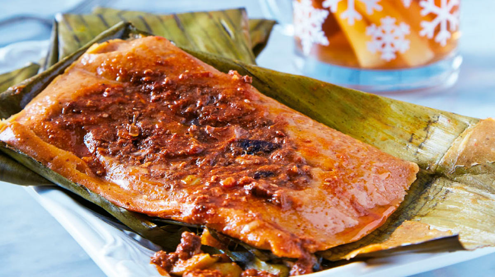

Tamales de Res
si no tienes pollo aste una res

Ingredientes:
1 kg de carne de res
Harina de maíz
Hojas de tamal
un machete
Preparación:
con el machete busca una res distraida y dale lo mas fuerte posible
Preparar la masa de tamal.
cocina la res sin el machete